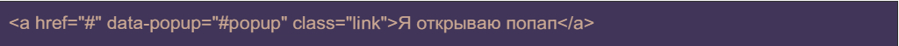
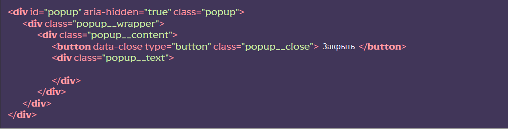
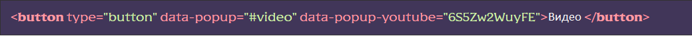
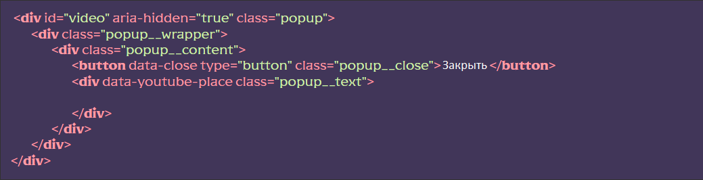

Подключение функционала
- [HTML] Подключить файл _popup.htm, после оболочки wrapper, в HTML-файл страницы @@include(‘html/_popup.htm’,{}), можно использовать снипет pop
- [SCSS] Подключить файл scss/base/popup.scss в файл scss/base.scss – раскомментировать строку @import ‘base/popup’;
- [JS] Подключить файл js/libs/popup.js в файл js/app.js – раскомментировать строку import ‘./libs/popup.js’
Использование функционала
Для того, чтобы вызвать попап, необходимо на странице ввести объект с дата-атрибутом, в котором указан селектор (класс или id) всплывающего окна, на которое ссылаемся:
Далее открыть файл html/_popup.htm, раскомментировать HTML-код подготовки попапа, указать селектор (id или класс) по которому вызывается попап, изменить код под свои нужды.
В примере попап вызывается по id popир:
Открытие YouTube видео в попапе
Для того чтобы открыть видеоролик в попапе, следует добавить блоку попапа атрибут data-popup-youtube, a в качестве значения указать код ролика. Также следует указать атрибут data-popup-youtube-place для объекта в котором хотим вывести ролик (Если атрибут data-popup-youtube-place не указан, ролик автоматически появится. в объекте с классом popup__text):
 Стили попапа можно писать и изменять в файле scss/base/popup.scss
Открытие попапа по хешу
Для того чтобы открыть попап при открытии страницы, добавляем к адресу хеш с именем селектора попапа

Методы и события
Методы
Работать с попапом из любого места можно импортировав переменную flsModules:

Далее обратится к классу роpup и работать с методом, например open()

где #popup селектор попапа
Внимание!После создания билда проекта (режим build) константа flsModules изменяется на modules_flsModules.То есть запрос будет modules_flsModules.popup.open(‘#popup’);
События
В классе попапов существуют ряд событий:
- beforePopupOpen – сработает перед открытием попапа
- afterPopupOpen – сработает после открытия попапа
- beforePopupClose – сработает перед закрытием попапа
- afterPopupClose – сработает после закрытия попапа
Чтобы работать с событием вешаем прослушку на document